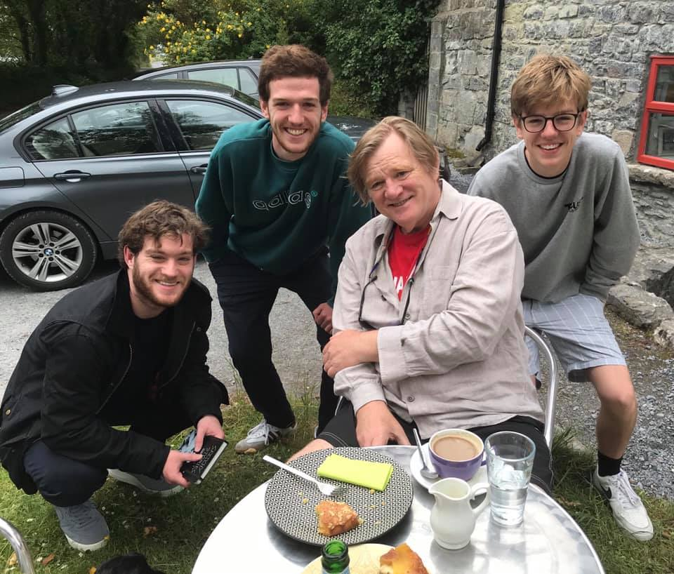

Name: Samuel Wellard
Student Number: s3921205
Student Email: s3921205@student.rmit.edu.au
Previous Education: St. Pius X College (2006-13), Northern Sydney Institute (2014,2019), Macquarie University (2015-18)
Fun Fact: I have been a massive Harry Potter fan in terms of both the books and films ever since I read the first book and saw the first film in 2001. From then on, it has been a key element in what shaped me and entertained me while I grew up. Fortunately in 2019 while on a trip through England, Ireland and France myself and my two brothers were lucky enough to bump into Brendan Gleeson (Mad-Eye Moody) in a cafe in rural Ireland.
Caption: Myself (right), with Brendan and my two brothers